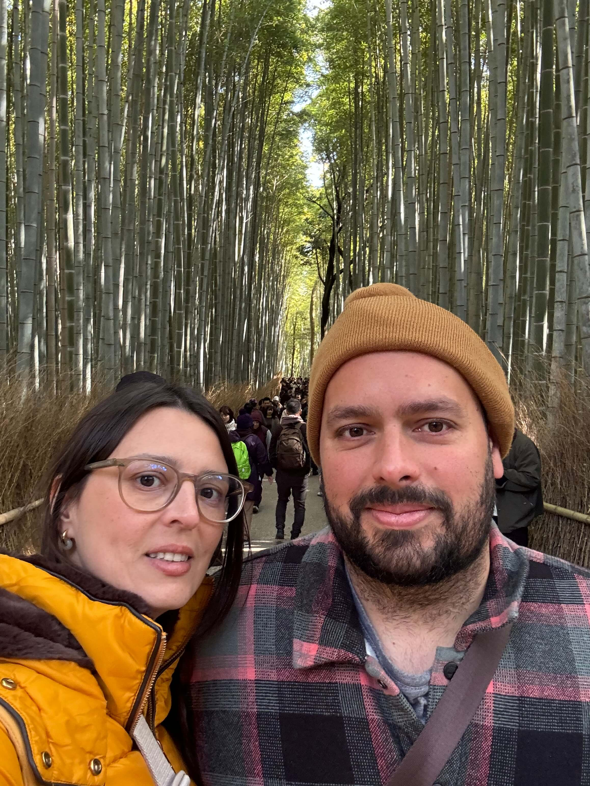
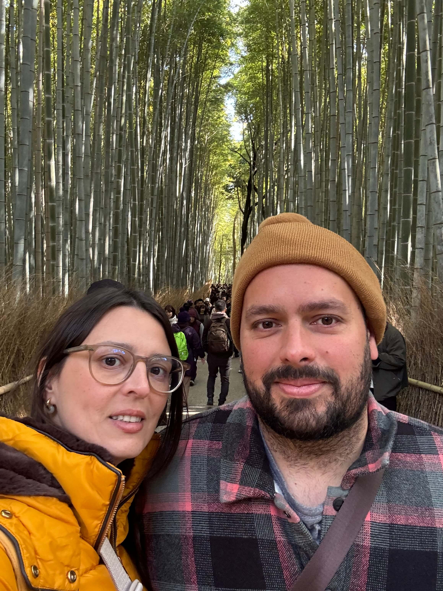

のお問合
20/02/2024
Desde los 30 años, imaginábamos este viaje. Japón siempre ha sido
ese destino mágico que, de alguna forma, sabíamos que formaría
parte de nuestra historia. Ahora, en nuestra luna de miel, estamos
cumpliendo ese sueño.
Esta aventura se ha convertido en algo aún más significativo, un
viaje que no solo marca el comienzo de nuestro matrimonio, sino
también la realización de un anhelo que llevamos con nosotros por
tantos años. Japón ya no es solo un lugar en el mapa; ahora es
parte de nuestra historia.


 
